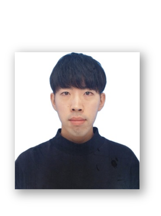

| Kaito Shiku |
| 志久 開人 |
| PhD Student · Kyushu University |
| I am currently a first-year PhD student at the Graduate School of Information Science and Electrical Engineering , supervised by Prof. Ryoma Bise . |
|
Expertise
Computer Vision / Medical Image Analysis / Label-Efficient Learning
|
Research Interests
My research focuses on label-efficient machine learning for medical image analysis. I have worked on a variety of medical imaging modalities, including cell culture images, endoscopic images, computed tomography (CT) images, and histopathological images. Recently, I have developed a strong interest in gene expression analysis, and my current research increasingly concentrates on this topic.
Medical Image Analysis
Computer Vision
Machine Learing
Gene Expression
News
| 2024/06 | Awarded the 2025 Excellent Student Award by the IEEE Fukuoka Section. |
| 2026/01 |
Our paper Hypernetwork-Based Adaptive Aggregation for Multimodal Multiple-Instance Learning in Predicting Coronary Calcium Debulking
has been accepted in
ISBI 2026 @ London
(International conference on medical image analysis; Oral). Kaito Shiku, Ichika Seo, Tetsuya Matoba, Rissei Hino, Yasuhiro Nakano and Ryoma Bise |
| 2025/11 |
Our paper Auxiliary Gene Learning: Spatial Gene Expression Estimation by Auxiliary Gene Selection
has been accepted in
AAAI 2026 @ Singapore
(Top-tier conference in AI, CORE Rank A*). Kaito Shiku, Kazuya Nishimura, Shinnosuke Matsuo, Yasuhiro Kojima, and Ryoma Bise |
| 2025/09 |
Our paper Learning Relative Gene Expression Trends from Pathology Images in Spatial Transcriptomics
has been accepted in
NeurIPS 2025 @ San Diego
(Top-tier conference in machine learning, CORE Rank A*). Kazuya Nishimura, Haruka Hirose, Ryoma Bise, Kaito Shiku and Yasuhiro Kojima |
| 2025/08 |
Our paper Single-cell Synaptome Mapping of Endogenous Protein Subpopulations in Mammalian Brain
has been accepted in
Nature Communications
(Impact factor = 15.7). Motokazu Uchigashima, Risa Iguchi, Kazuma Fujii, Kaito Shiku, Pratik Kumar, Xinyi Liu, Mari Isogai, Chiaki Hoshino, Manabu Abe, Motohiro Nozumi, Yosuke Okamura, Michihiro Igarashi, Kenji Sakimura, Ryoma Bise, Luke D Lavis and Takayasu Mikuni |
| 2025/08 |
Our paper Learning from Majority Label: A Novel Problem in Multi-class Multiple-Instance Learning
has been accepted in
Pattern Recognition
(Impact factor = 7.6). Shiku Kaito, Shinnosuke Matsuo, Daiki Suehiro and Ryoma Bise |
| 2025/08 |
Our paper Domain Adaptation for Ulcerative Colitis Severity Estimation Using Patient-Level Diagnoses
has been accepted in
Workshop on MICCAI 2025 @ Korea
(International conference on medical image analysis). Takamasa Yamaguchi, Brian Kenji Iwana, Ryoma Bise, Shota Harada, Takumi Okuo, Kiyohito Tanaka and Shiku Kaito |
| 2024/08 |
Our paper Ordinal Multiple-instance Learning for Ulcerative Colitis Severity Estimation with Selective Aggregated Transformer
has been accepted in
WACV 2025 @ Arizona
(International conference on computer vision, CORE Rank A). Shiku Kaito, Kazuya Nishimura, Daiki Suehiro, Kiyohito Tanaka and Ryoma Bise |
| 2024/06 | Accepted into the 次世代AI人材育成プログラム (K-BOOST) . |
| 2023/12 |
Our paper Counting Network for Learning from Majority Label
has been accepted in
ICASSP 2024 @ Korea
(Top-tier conference in signal processing, h-index=123). Shiku Kaito, Shinnosuke Matsuo, Daiki Suehiro and Ryoma Bise |
| 2023/07 |
Our paper Cell Tracking in C. elegans with Cell Position Heatmap-Based Alignment and Pairwise Detection
has been accepted in
EMBC 2023 @ Sydney
. Shiku Kaito, Hiromitsu Shirai, Takeshi Ishihara and Ryoma Bise |